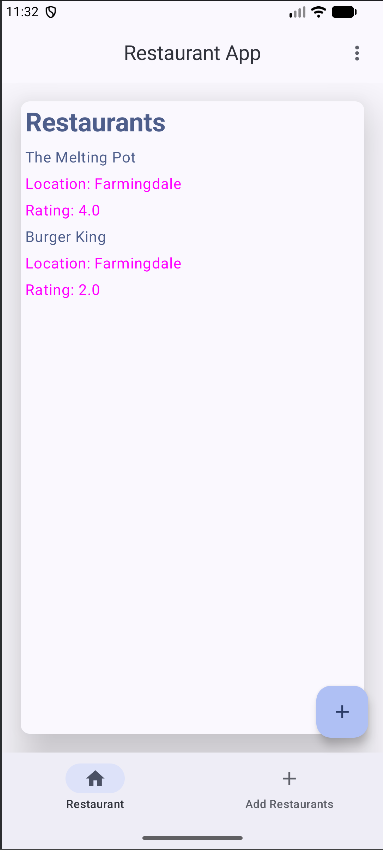
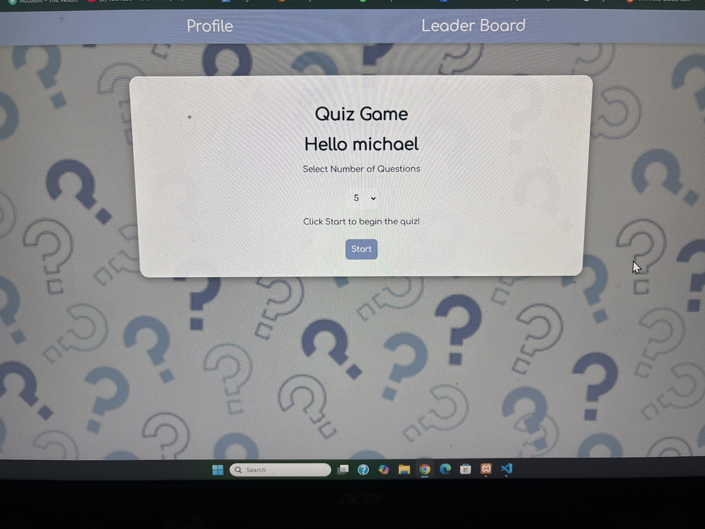

Projects
Restaurant App

The Restaurant App is an Android application that allows users to save and manage information about restaurants. Users can add restaurants and view their saved restaurant information through an organized interface.
Technologies: Kotlin, Room Database
This was an individual school project.
GitHub LinkQuiz Quest

The Quiz App is a web-based application that allows users to create an account, log in, and complete a series of quiz questions. The application keeps track of the user's answers and displays their results after completing the quiz. The app also uses a database that keeps track of user accounts and scores
Technologies: HTML, CSS, PHP, JSON, SQL
GitHub Link